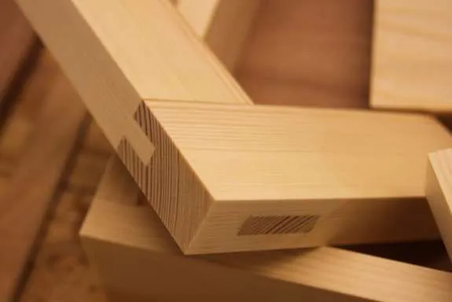
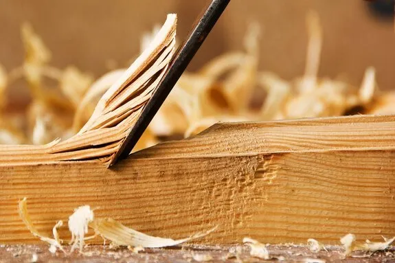

Kök och badrum
Platsbyggda lösningar med känsla för form, funktion och material.
Finsnickeri i Gävle
Jensens Finsnickerier AB är ett modernt finsnickeri med gedigen hantverkskunskap och tekniska lösningar för inredningar som håller.

Från idéarbete, uppmätning, kalkyl och beredning till bearbetning av material, snickeriproduktion, ytbehandling och montering. Det ger oss unik kontroll över hela processen.
Vi arbetar med inredningar till butiker, hotell, offentliga miljöer, kontor och privata hem.
Platsbyggda lösningar med känsla för form, funktion och material.
Specialinredningar för miljöer där uttryck och hållbarhet är viktiga.
Genomtänkta lösningar från idé till färdigt montage.

Hantverk och precision
Hos oss är traditionellt hantverk och genuint kunnande grunden i verksamheten. Tillsammans med en avancerad maskinpark gör det att vi alltid siktar på högsta kvalitet i det vi gör.
“Kreativitet från idé till produktion och montage.” – Sören Jensen
Vi har i snart 30 år tillsammans med våra kunder arbetat med form, kvalitet och känsla för att skapa interiörer och exteriörer som håller. Vi arbetar både gentemot privatpersoner och företag.
Läs mer om ossKontakta oss för att prata om idé, material, lösning och utförande.